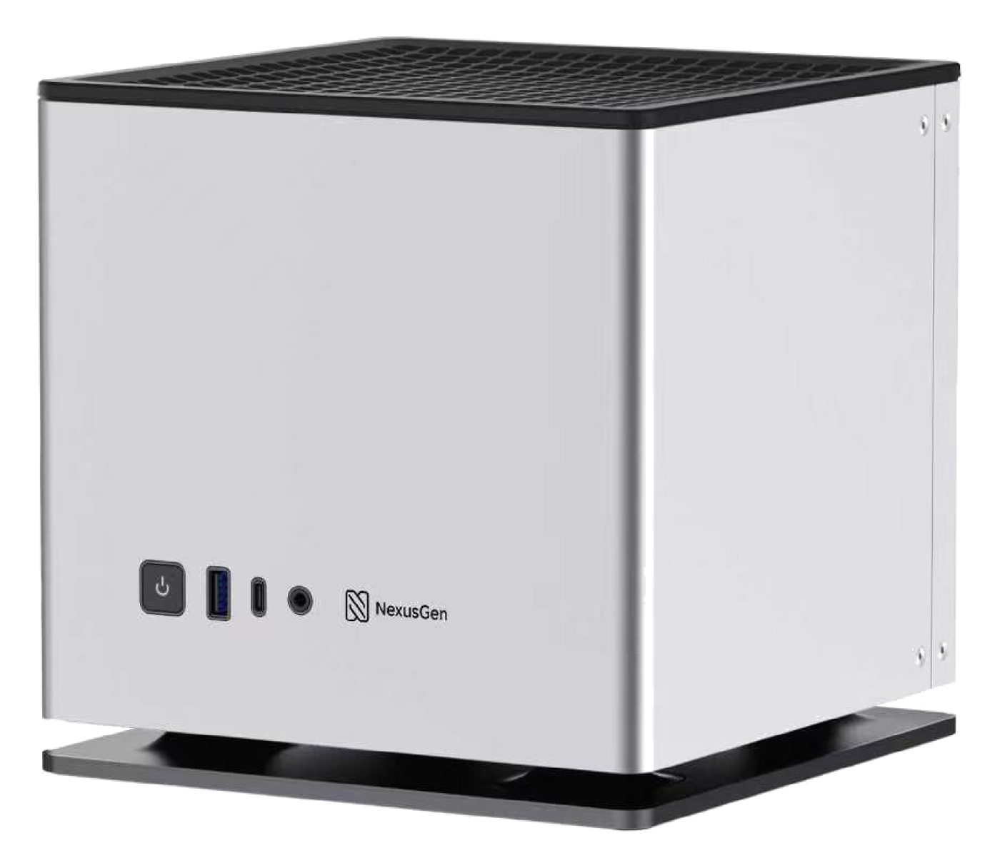
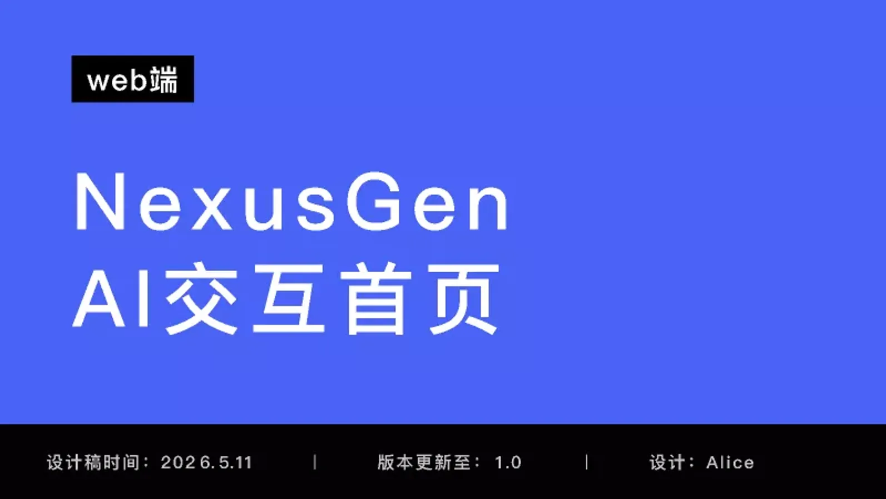
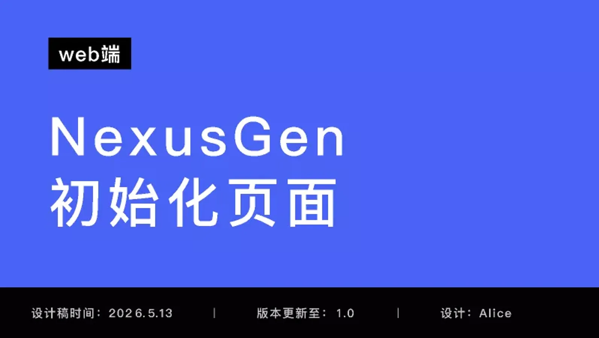
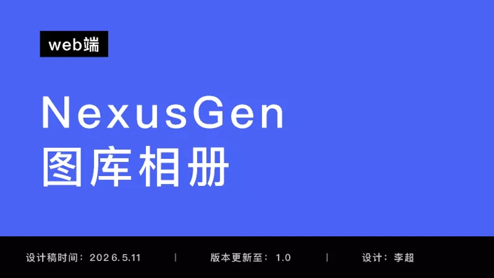
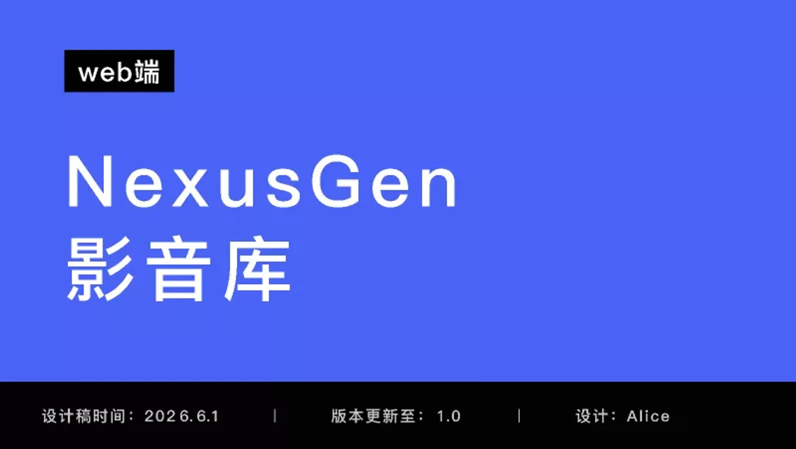
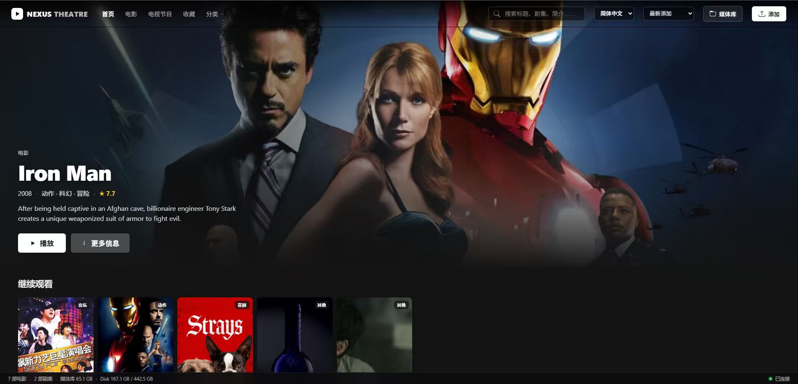
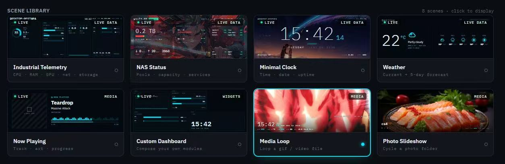

A private AI brain for the home.
Nexus Gen is a privacy first AI NAS: local models, agents, and storage in one box. I joined the 0 to 1 build inside Dreame's incubator, wrote the early PRD and twelve month roadmap, ran the user research, and shipped two of its surfaces with my own hands. The product won the CES Asia Best Innovation Award.

What was not working
The company had a strong storage product and a strong hardware story, and a wide open question: what does AI actually do for someone who owns a NAS? Local AI systems were capable but hard to discover, unreliable at tool calling, and unclear in value. The agent could technically do a lot. Nobody could tell, and it kept timing out.
What the user actually needed
Users did not want AI features. They wanted AI to remove friction from things they already cared about: media, files, photos, and privacy. The product had to disappear into an existing habit, not add a new one. That single insight decided the roadmap order.
Three reasons people were not using AI at home
The deck we pitched with framed the problem as three refusals. Each one had a structural answer, and the answers became the three pillars of the product.
Token bills keep growing, the big models keep raising prices, and the return is hard to control.
One purchase, expand on demand, no per token billing, no vendor lock in. Long term cost stays flat.
Uploading the family archive or the company's contracts to a cloud model felt like leaving core assets out in the open.
Data never leaves the box. Sovereignty by construction, not by policy.
AI capability rarely matches the actual scene. Deployment is slow, results are thin, and setup needs an engineer.
Packaged, shareable skills so expert workflows install like apps instead of being rebuilt per household.
Consumer NAS boxes can store your data but cannot run a model. Enterprise AI servers can run the model but nobody can afford one at home. Nexus Gen sits in the gap: consumer price, enterprise grade local inference, a hundred billion parameter model on the desk.
One overview document, twenty one requirement docs, four phases
The first artifact I wrote was the product overview and roadmap. It set the vision, named the users, inventoried what already worked, drew the architecture, and then sequenced twelve months of work into phases with priorities and estimates. Every phase linked to its own detailed PRD.
Build a private cloud storage platform with an on device large model at its core. A NAS that stops being a passive network drive and becomes active intelligence: it understands your files, organizes your data, and automates your workflows, with every inference done locally and zero bytes uploaded.
- On device AI native: all inference on local GPU or NPU, no cloud API, no privacy exposure
- Agent driven: understand intent, plan steps, execute, report back, instead of just searching files
- Private knowledge base: RAG over the user's own files, personal or team
- Open ecosystem: an agent plugin market plus a Docker app store, community driven
Core: technical individuals
Data scattered across cloud drives and local disks, AI tools that demand uploads, no unified personal knowledge management
Expansion: small teams
Commercial NAS has no AI, cloud collaboration tools leak control of data, team knowledge never settles anywhere
Later: small and mid sized business
Compliance demands, AI that has to be private, multi site sync
- Local model inference engine management
- AI chat assistant interface
- Smart file assistant agent
- Docker app management platform
- Richer in browser file preview
- Multimodal AI capability platform
- Smart photo album
- Knowledge base with RAG
- Automation workflow engine
- Monitoring and smart alerts
- Mobile app v1
- Agent plugin system and market
- Multi device sync
- AI security audit and compliance
- Advanced backup and disaster recovery
- Third party cloud storage gateway
- AI development platform (Model Studio)
- Multi NAS cluster management
- Enterprise permissions and audit
- Open API and developer portal
- Edge compute and IoT integration
Media, music, downloads, notes, passwords, code hosting, and monitoring were explicitly marked as buy, not build: Jellyfin, Navidrome, qBittorrent, Outline, Vaultwarden, Gitea, Grafana, all deployed through the Docker platform so the team's own effort stayed on the AI layer.
What I owned
- Wrote the product overview PRD and the twelve month roadmap: vision, personas, baseline inventory, architecture, four phases with priorities and estimates, and the buy versus build decisions.
- Interviewed 100 NAS users and ranked Home Theater as the number one new feature opportunity after core file management, then used the same research to order the roadmap phases.
- Owned the roadmap for the AI NAS unit inside a company wide incubator, competing with roughly one hundred internal projects for investment.
- Owned model selection for the on device agent through a six dimension evaluation and A/B tests of seven LLMs across 1,000+ prompts.
- Diagnosed the agent's timeout defect and drove the move to an MCP based tool registry: 80% fewer unnecessary tool selection tokens, roughly three minutes off average latency, timeout failures eliminated.
- Benchmarked competing NAS and cloud AI privacy models, identified user controlled data access as a key need, and defined the dual volume privacy architecture separating local and internet accessible data. It became a key differentiator behind the CES Asia 2026 Innovation Award.
- Owned requirements and flows for the AI chat, onboarding, photo gallery, and media library surfaces, working with two designers.
- Built two surfaces myself: the Home Theater prototype and the Vitrine display driver. Each has its own page.
What had to be true
- Everything had to run acceptably on consumer hardware, not a cloud GPU cluster.
- Privacy was a stated pillar of the pitch, not a compliance checkbox. The architecture had to hold up under real scrutiny.
- The agent's tool registry was growing faster than its ability to reason about which tool to call, and every added integration made timeouts more likely.
- The team was small and the incubator clock was short. Anything that could be bought or deployed from open source had to be.
Write the map before the features
Before any feature work I wrote the overview document: who the product is for, what already works, what the architecture looks like, and what happens in each of four phases. Twenty one detailed PRDs hung off it.
The point was less the document than the argument it forced: P0 had to make AI usable and the system extensible, nothing else. Multimodal and knowledge work waited for P1. Ecosystem waited for P2. Platform waited for P3.
Find the real opportunity
Rather than starting from what the AI could do, I ran structured interviews with 100+ existing NAS users to map where they actually lost time: finding something to watch, organizing a media library, recovering from duplicate or misnamed files.
Home Theater ranked as the number one new feature opportunity after core file management. It became its own branch of the work, with automated indexing, IMDb metadata, subtitle matching, and on device recommendations.
Diagnose the timeouts
Agent timeouts and runaway token use traced back to exhaustive API enumeration: the agent was reasoning over every available tool on every turn.
I proposed an MCP based tool registry so the agent only reasoned over relevant tools per task. Unnecessary tool selection tokens dropped by 80%, average latency fell by about three minutes, timeout failures disappeared, and the agent could scale to more tools without getting slower.
Choose the on device model
Model choice had to balance quality, latency, and what would actually run on the box. I built a six dimension evaluation framework and A/B tested seven candidate LLMs across 1,000+ prompts.
Qwen paired with Hermes scored highest at 4.5 out of 5 and became the default. The same harness later caught 40+ release critical defects before they reached users.
Make privacy structural
I benchmarked how competing NAS products and cloud AI services handled privacy and found the real need was user controlled data access, not a blanket promise. A setting cannot deliver that; an architecture can. I defined two volumes: an isolated private volume for fully offline data and models, and a separate internet accessible volume for anything that touches the network, so users decide what the model may reach.
That design was part of what the CES Asia jury cited.
What shipped
- A product overview and roadmap that the team, the incubator committee, and later the investor deck all built on.
- An MCP based tool registry that scoped the agent's tools to the task at hand, cutting tool selection tokens by 80% and average latency by about three minutes.
- A reproducible model evaluation harness used for selection and then as a regression suite.
- The dual volume privacy architecture.
- Four designed surfaces with owned requirements: AI chat, onboarding, photo gallery, media library.
- Two shipped branches: the Home Theater experience and the Vitrine display driver.
How it was built
- Agent layer: task planning and decomposition, dynamic skill loading, chain of thought over long tasks, a containerized agent runtime.
- Model layer: a hundred billion parameter class local LLM with 4 and 8 bit quantization, PagedAttention memory optimization, multimodal vision, and Whisper transcription.
- Data layer: private RAG with traceable citations, OCR document parsing, incremental indexing into a vector database, full disk AES-256 encryption.
- Connection layer: P2P traversal so the box is reachable without a public IP, TLS 1.3, multi device sync, wearable data flowing back in.
- Hardware: a flagship AMD APU with 128 GB unified memory, NVMe plus large SATA arrays, 10GbE, ZFS. The hardware team's work; my job was making sure the software roadmap used it.
Trade offs I made on purpose
- Sequenced the roadmap so P0 only made the AI usable and extensible, and resisted pulling knowledge base or ecosystem work forward.
- Marked media, music, downloads, notes, and monitoring as buy, not build, so team effort stayed on the differentiating AI layer.
- Treated the tool calling defect as a product problem, not an engineering bug: an agent that times out has no product value regardless of model quality.
- Made privacy a property of the architecture rather than a setting a user could misconfigure.
- Validated one sharp wedge (Home Theater) with real usage before expanding scope.
Four design files, mapped to the roadmap
I owned the requirements and flows for these surfaces and worked with the design team on the screens. Each file below is public in Figma; the cards open the live canvas. The media library file belongs to the Home Theater branch and lives there.

AI interaction home
- Home with suggested questions
- Text chat, stop generation, edit a message
- Attachments and image to image
- Multimedia chat over files, images, and video
- Movie chat that ends in a download

Onboarding
- Language
- Account
- Storage and data setup
- Device
- Done, with an English reference set

Photo gallery
- Library and favorites
- Albums
- People, grouped by face
- Duplicate check
- Recycle bin
- Upload

Media library
- Home, search, results
- Library grid and hover states
- Manual metadata match
- Movie and series detail with episodes
Takeaways
- A roadmap is an argument about order. Writing the overview first made every later prioritization fight shorter.
- A model quality problem and a product adoption problem can look identical from the outside. The fix here was architectural, not a bigger model.
- The fastest way to earn a roadmap slot is a working thing people can click. Both branches below started that way.
Two things I built off this trunk

Home Theater
Validated as a priority use case through research with 100 NAS users, translated into an MVP, and aligned leadership and engineering behind it. Built with IMDb based subtitle matching and an on device recommendation engine.

Auxiliary display driver
Reverse engineered and implemented a driver for the NAS prototype's undocumented USB panel, validating the hardware interface and adding custom display functions with product and engineering.